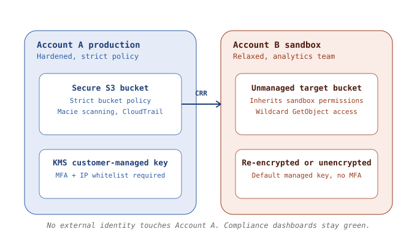
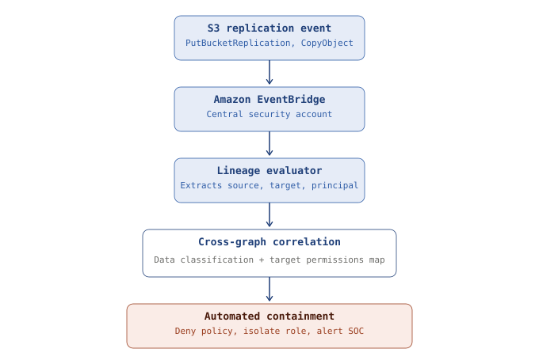

Palo Alto pays $25B to kill the perimeter
Plus Noma's new MCP gatekeeper, the blended identity liability shift, and why your DSPM engine is lying to you.
Leading up to the major Q3 enterprise security buying cycles, Identity and Access Management (IAM) and Cloud Security platforms have accelerated a hard structural shift away from human-centric controls toward securing autonomous service accounts, API keys, and machine-to-machine connections.
Palo Alto Networks Finalizes CyberArk Acquisition for $25B
This week, we have a complicated acquisition scenario that’s going to affect a lot of companies. In a massive consolidation play that’s reshaping the entire identity ecosystem, Palo Alto Networks finalized its landmark $25 billion acquisition of privileged access management (PAM) leader CyberArk. Palo Alto is integrating CyberArk’s core engine directly into its Prisma Cloud and Cortex platforms to create an end-to-end Machine and Non-Human Identity (NHI) lifecycle pipeline.
For security architects, this means the platform behemoths are acknowledging that perimeter security is dead — identity is the new perimeter. Palo Alto is trying to own the entire spectrum, matching runtime cloud security posture (CSPM) with active credential authorization. But that’s the long game: there is no magic automated integration here yet.
If the giant platform players are paying premium multiples just to bolt an identity engine onto their cloud security suites, it tells you exactly where enterprise vulnerabilities are actually being exploited. Do not trust a vendor who claims their standard cloud-native application protection platform (CNAPP) handles NHI “out of the box.” If Palo Alto needs a multi-billion dollar acquisition to secure privileged service accounts, your enterprise deployment is going to require deep, structural IAM cleanup and custom API plumbing, not a single-pane-of-glass dashboard. Legacy secrets rotation won’t cut it anymore.
Here is what the acquisition actually means for your roadmap, support, and contract renewals.
The Splunk Effect
Palo Alto has stated that CyberArk will continue to be sold and maintained as a standalone platform, and they have absorbed CyberArk’s engineering talent into their massive Israeli R&D hub. In the short term, your Tier 1 and Tier 2 support tickets for core Privileged Access Manager (PAM) or Identity Flows will stay with familiar CyberArk reps.
But over the next 12–18 months, Palo Alto will inevitably merge support structures into its broader enterprise ticketing workflows. If you have been through the Cisco-Splunk or Broadcom-VMware integrations, you know the drill: highly specialized, deep-domain identity engineers get siloed into higher-tier escalation paths.
The Feature Split
CyberArk is currently working through its own recent integration debt from buying Venafi (machine identities/certificates) and Zilla Security (governance). Palo Alto’s move completely re-prioritizes the engineering backlog.
- What slows down: Pure-play, standalone identity governance and legacy, on-premises vaulting innovations will take a backseat. If you are waiting on niche, on-prem PAM feature requests, don’t hold your breath.
- What speeds up: Cloud-native token governance, Just-In-Time (JIT) access, and Agentic Identity Securing. Palo Alto is explicitly using CyberArk’s core engine to solve the autonomous AI agent and machine-to-machine authorization gap within Prisma Cloud and Cortex.
- The architecture shift: Expect CyberArk’s secrets management engine to be natively piped into Prisma CSPM. Instead of just flagging an exposed secret in an S3 bucket, the platform will soon have the capability to actively revoke or rotate that credential via the CyberArk backbone in real time.
Prepare for Portfolio Squeeze
Palo Alto didn’t pay an 18.4x revenue multiple to let you buy standalone CyberArk modules indefinitely. Their explicit corporate strategy is platformization — incentivizing customers to consolidate their firewalls, SRE/Cortex operations, Prisma cloud security, and now identity security under one master agreement.
- The renewal trap: At your next major contract renewal, your account team will likely structure the deal around bundled credits or platform discounts. These will make standalone CyberArk licensing feel artificially expensive compared to bundling it with Prisma Cloud or Cortex XDR.
- Interoperability lock-in: While regulatory approvals required Palo Alto to maintain open APIs for third-party tools like CrowdStrike or Wiz, expect the tightest, lowest-latency automated remediation features to be exclusive to the Palo Alto ecosystem.
How to Handle This in Your Next Architecture Review
If your team is heavily reliant on CyberArk or actively deploying it, use these defensive guideposts:
- Audit your custom plugins: If you use custom-built Autoit scripts or complex CPM plugins for legacy enterprise apps, verify their stability. Ensure your identity team isn’t relying on tribal knowledge, because the pool of legacy CyberArk deployment engineers will soon morph into cloud-first identity architects. In practical terms, that means doubling down on documenting your custom CyberArk API integrations, CPM (Central Policy Manager) plugins, and PSM (Privileged Session Manager) connection components as quick as you can. When support inevitably scales into the broader Palo Alto umbrella, resolving bespoke infrastructure bugs will take longer.
- Hold fast on standards-based infrastructure: Insist on utilizing open, agnostic integration layers (OIDC, OAuth, SAML, and MCP for AI components). Do not let vendor-specific hooks creep into your application code, even if Palo Alto promises a “one-click” secure pipeline between Prisma and CyberArk.
- Leverage competitors in negotiations: Use the integration turbulence to your advantage during renewals. Keep competitors like BeyondTrust, Delinea, or Saviynt warm in your pipeline. Let Palo Alto know that if its platform bundling strategy reduces your best-of-breed identity functionality, you are fully prepared to decouple your PAM layer from your cloud security suite.
Noma Launches “Agent Access Control” for MCP Servers
Noma announced the launch of Agent Access Control designed to govern Model Context Protocol (MCP) servers and autonomous AI agents throughout the enterprise. Instead of treating an enterprise AI tool like a static web app, Noma’s new feature acts as an inline authorization gatekeeper, discovering shadow AI-to-machine integrations and enforcing real-time access policies on what specific tools an agent can execute within an MCP server.
It’s an architecturally sound play if you are actively evaluating platforms to build a scalable security boundary around internal AI development. By building an abstraction layer that speaks MCP natively, Noma is saving your internal application security teams months of custom data-plumbing work and policy-as-code engineering.
But look past the sales collateral. “Out-of-the-box” agent posture control cannot fix broken backend entitlement logic. If your underlying S3 buckets or database service accounts already suffer from privilege creep, putting an agent access gateway on top just creates a prettier view of your existing identity debt. Evaluate it as a runtime policy engine, not a cure for bad IAM hygiene.
The “Blended Identity” Liability Shift
A wave of enterprise IAM vendors have announced a hard push toward “blended identity” frameworks, where human developers and autonomous AI coding agents share single, unified credentials and audit trails to speed up CI/CD pipelines. The vendor pitch is clear: seamless, hyper-automated deployment without token friction.
The strategy raises a specific operational question that the marketing gloss entirely ignores: who owns the forensic audit trail when an autonomous coding agent pulls a dependency, accidentally introduces a vulnerable package into a production repository, and signs the commit using a blended developer certificate?
A human developer who introduces a vulnerability leaves a trace of intent. An autonomous agent operating under a shared identity token leaves a forensic nightmare. If your logging pipelines cannot explicitly separate a human’s intent from an agent’s recursive executions before code hits the main branch, you are introducing blind liability into your software supply chain. Nobody wants to learn this the hard way.
Why Your DSPM Engine Is Lying to You
Most Data Security Posture Management (DSPM) strategies fall apart because they view cloud data as a static map of buckets and classifications. They tell you “Bucket X contains PII.” They tell you “Role Y has access to Bucket X.”
But cloud environments are not static; they are dynamic networks of data pipelines. The moment an engineer or an automated application workflow configures native replication across account boundaries, traditional DSPM engines and standard CSPM (Cloud Security Posture Management) tools suffer from a fatal contextual disconnect.
The Attack Vector: Object Cloning Past the Security Perimeter
Consider a standard enterprise multi-account AWS architecture. You have a highly secure production environment (Account A) containing core transaction databases, and a data-science or analytics environment (Account B) where data teams train local models or run ad-hoc analytics.

Figure 1 — Cross-account replication crosses the security perimeter undetected
To feed a local analytics model, an internal developer sets up S3 Cross-Region Replication (CRR) or uses an automated script to sync data from the hardened production bucket in Account A to an unmanaged target bucket in Account B.
Here are some examples of exactly how this can break your security visibility:
- The metadata dissociation: The original object in Account A was tightly coupled with a specific KMS customer-managed key (CMK), an explicit bucket policy requiring multi-factor authentication (MFA), and a tight IP-whitelist boundary.
- The target sink hole: When the object replicates to Account B, it is decrypted by the Account A role, sent over the AWS backbone, and re-encrypted using either a default managed key in Account B or left entirely unencrypted at the object level if the destination bucket lacks strict enforcement.
- The identity drift: Your IAM monitoring tools show that no external, untrusted identity has touched Account A. Technically, your compliance dashboards stay green. But the sensitive payload now lives in a relaxed sandbox account where half the engineering org has wild-card s3:GetObject or s3:ListBucket permissions to facilitate rapid testing.
The data has successfully escaped its security perimeter without triggering a single “unauthorized access” or data exfiltration alert. The data didn’t leave via the public internet; it moved through native cloud fabric.
Building a Contextual Data-Lineage Boundary
To solve this in your actual job, you cannot rely on periodic, agentless data classification scans. A scan that runs every 24 hours leaves a massive dwell-time window where shadow data copies can be spun up, ingested by an autonomous agent or external RAG pipeline, and deleted before the next index cycle.
You must build a real-time Data Lineage Access Graph that treats data movement and identity permissions as a single, indivisible asset.
The Blueprint: Real-Time Event Driven Topology Tracing
Instead of just looking at where data sits, you need to intercept the APIs that move it. This requires deploying an event-driven telemetry architecture across your cloud organization.

Figure 2 — Real-time event-driven topology tracing pipeline
- API-level interception: Wire every AWS account under your AWS Organizations root to pipe s3:PutBucketReplication, s3:PutObject, and s3:CopyObject events via Amazon EventBridge to a centralized security monitoring account.
- The lineage evaluator: A lightweight processing engine (like an AWS Lambda function or a containerized worker) evaluates the incoming event payload. It extracts the source ARN, the destination ARN, and the IAM session principal that initiated the replication.
- Cross-graph correlation: The evaluator immediately queries your data catalog to fetch the classification tag of the source bucket (e.g., DataClass: Confidential_PII). Simultaneously, it queries your identity provider or IAM policy engine to pull the effective permissions map of the target destination bucket.
- Instant blast radius enforcement: If the destination bucket has an active resource policy allowing PrincipalOrgID wildcards or lacks explicit encryption validation, the system executes an automated containment playbook: it immediately applies an explicit Deny bucket policy to the destination asset, isolates the replication IAM role, and alerts the SOC with a deterministic risk vector — “High-value production data has been downgraded to a low-assurance account.”
3 Architectural Gotchas for Your Next Security Review
When evaluating native database replication tools, pipeline orchestrators, or specialized data-security platforms, bypass the standard marketing presentations and force them to address these edge cases:
The platform must ingest CloudTrail logs from both the source and target accounts, using the unique sharedEventID to stitch the two halves of the cross-account data transaction back together into a single trace.
Traditional string matching and regex are useless here. The tool must analyze the ingestion pipeline before the vectorization stage, or hook into the orchestration framework (LangChain/LlamaIndex) to classify the source data before it hits the embedding model.
Continuous configuration state monitoring that treats the cryptographic key policy as part of the data’s security posture. If the target key allows a broader set of administrative or usage principals than the source key, the platform must flag it instantly as an unauthorized privilege expansion.
Thanks for reading the inaugural issue of The Independent Defender. If a peer forwarded this to you, visit independentdefender.com/subscribe to get no-fluff security industry analyses and practical architectural frameworks delivered to your inbox twice monthly.